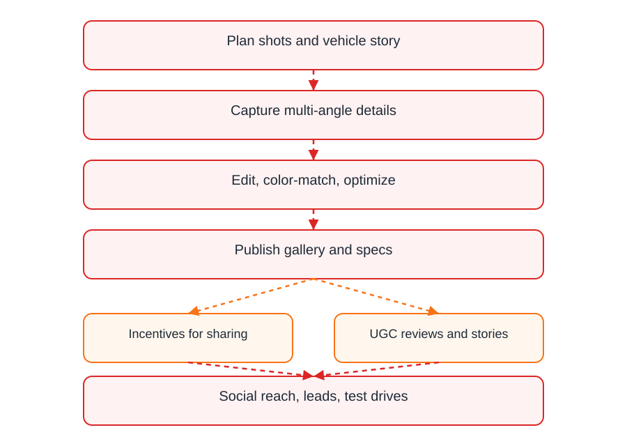

Photo set
Put buyer-relevant angles in order
Start with the clearest exterior shot, then show interior, details, damage, odometer, documents, or parts. Keep the link short enough to review on a phone.

Vehicle photos often move through chat, listing pages, in-person visits, and buyer follow-ups. A focused link keeps the angles together and gives you a clean way to close outdated photos later.
Use one share per car, bike, part, or comparison set.
Include exterior, interior, odometer, condition notes, and flaws buyers should see.
Expire or revoke links after a sale, update, or buyer review window.
Avoid mixing multiple vehicles unless the share is specifically for comparison.
Add the practical angles that answer common buyer questions.
Close links after price changes, condition updates, or completed sales.
Start with the clearest exterior shot, then show interior, details, damage, odometer, documents, or parts. Keep the link short enough to review on a phone.

A QR code is useful when someone is standing near the vehicle or looking at printed information. The same share also works as a pasted link.
If the vehicle sells or the listing changes, revoke the old share. A closed link is clearer than leaving old photos floating around.

Upload the useful angles, share one link or QR code, and close access when the listing changes or the sale is done.
Try MaiIMG